생산자동화산업기사 (2020-08-22 기출문제)
1과목: 기계가공법 및 안전관리
1. 밀링가공에서 하향절삭 작업에 관한 설명으로 틀린 것은?
- 절삭력이 하향으로 작용하여 가공물 고정이 유리하다.
- 상향절삭보다 공구수명이 길다.
- 백래시 제거 장치가 필요하다.
- 기계강성이 낮아도 무방하다.
(정답률: 70%)

2. 고속가공의 특성에 대한 설명으로 틀린 것은?
- 황삭부터 정삭까지 한 번의 셋업으로 가공이 가능하다.
- 열처리된 소재는 가공할 수 없다.
- 칩(chip)에 열이 집중되어, 가공물은 절삭역 영향이 적다.
- 가공시간을 단축시켜, 가공능률을 향상시킨다.
(정답률: 69%)
3. 밀링작업에 대한 안전사항으로 틀린 것은?
- 가공 전에 각종 레버, 자동이송, 급속이송장치 등을 반드시 점검한다.
- 정면커터로 절삭작업을 할 때 칩커버를 벗겨 놓는다.
- 주축속도를 변속시킬 때에는 반드시 주축이 정지한 후에 변환한다.
- 밀링으로 절삭한 칩은 날카로우므로 주의하여 청소한다.
(정답률: 88%)
4. 다음 중 분할법의 종류에 해당하지 않는 것은?
- 단식분할법
- 직접분할법
- 차동분할법
- 간접분할법
(정답률: 61%)
5. 공기 마이크로미터를 원리에 따라 분류할 때 이에 속하지 않는 것은?
- 광학식
- 배압식
- 유량식
- 유속식
(정답률: 69%)
6. 보링 머신에서 사용되는 공구는?
- 엔드밀
- 정면 커터
- 아버
- 바이트
(정답률: 57%)
7. 숫돌 입자의 크기를 표시하는 단위는?
- mm
- cm
- mesh
- inch
(정답률: 73%)
8. 밀링 머신에서 절삭공구를 고정하는데 사용되는 부속장치가 아닌 것은?
- 아버(arbor)
- 콜릿(collet)
- 새들(saddle)
- 어댑터(adapter)
(정답률: 63%)
9. 금긋기 작업을 할 때 유의사항으로 틀린 것은?
- 선은 가늘고 선명하게 한 번에 그어야 한다.
- 금긋기 선은 여러 번 그어 혼동이 일어나지 않도록 한다.
- 기준면과 기준선을 설정하고 금긋기 순서를 결정하여야 한다.
- 같은 치수의 금긋기 선은 전후, 좌우를 구분하지 말고 한 번에 긋는다.
(정답률: 72%)
10. 고속도강 드릴을 이용하여 황동을 드릴링 할 때, 적합한 드릴의 선단각은?
- 60°
- 90°
- 110°
- 125°
(정답률: 64%)
11. 해머 작업 시 유의사항으로 틀린 것은?
- 녹이 있는 재료를 가공할 때는 보호 안경을 착용한다.
- 처음에는 큰 힘을 주면서 가공한다.
- 기름이 묻은 손이나 장갑을 끼고 가공을 하지 않는다.
- 자루가 불안정한 해머는 사용하지 않는다.
(정답률: 83%)
12. 길이 400mm, 지름 50mm의 둥근 일감을 절삭속도 100m/min로 1회 선삭하려면 절삭시간은 약 몇 분 걸리겠는가? (단, 이송은 0.1mm/rev이다.)
- 2.7
- 4.4
- 6.3
- 9.2
(정답률: 60%)
13. 3개 조(jaw)가 120°간격으로 배치되어있고, 조가 동일한 방향, 동일한 크기로 동시에 움직이며 원형, 삼각, 육각 제품을 가공하는데 사용하는 척은?
- 단동척
- 유압척
- 복동척
- 연동척
(정답률: 68%)
14. 연삭숫돌의 결합체(bond)와 표시기호의 연결이 바른 것은?
- 셸락 : E
- 레지노이드 : R
- 고무 : B
- 비트리파이드 : F
(정답률: 61%)
15. 공기 마이크로미터에 대한 설명으로 틀린 것은?
- 압축 공기원이 필요하다.
- 비교 측정기로 1개의 마스터로 측정이 가능하다.
- 타원, 테이퍼, 편심 등의 측정을 간단히 할 수 있다.
- 확대 기구에 기계적 요소가 없기 때문에 장시간 고정도를 유지할 수 있다.
(정답률: 59%)
16. 목재, 피혁, 직물 등 탄성이 있는 재료로 된 바퀴 표면에 부착시킨 미세한 연삭 입자로서 연삭 작용을 하게하여 가공 표면을 버핑 전에 다듬질 하는 방법은?
- 폴리싱
- 전해가공
- 전해연마
- 버니싱
(정답률: 61%)
17. 구성인선의 방지대책에 관한 설명 중 틀린 것은?
- 경사각을 작게 한다.
- 절삭 깊이를 적게 한다.
- 절삭속도를 빠르게 한다.
- 절삭공구의 인선을 예리하게 한다.
(정답률: 62%)
18. 합금 공구강에 대한 설명으로 틀린 것은?
- 탄소공구강에 비해 절삭성이 우수하다.
- 저속 절삭용, 총형 절삭용으로 사용된다.
- 합금공구강에는 Ag, Hg의 원소가 포함되어 있다.
- 경화능을 개선하기 위해 탄소공구강에 소량의 합금원소를 첨가한 강이다.
(정답률: 59%)
19. 기어 절삭기에서 창성법으로 치형을 가공하는 공구가 아닌 것은?
- 호브(hob)
- 브로치(broach)
- 래크 커터(rack cutter)
- 피니언 커터pinion cutter)
(정답률: 63%)
20. 공작기계의 3대 기본운동이 아닌 것은?
- 전단운동
- 절삭운동
- 이송운동
- 위치조정운동
(정답률: 59%)
2과목: 기계제도 및 기초공학
21. 다음 그림과 같은 제3각 정투상도의 평면도와 우측면도에 가장 적합한 정면도는?
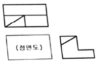
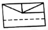
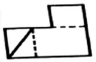
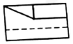
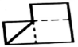
(정답률: 67%)
22. 센터 구멍의 간략 도시 방법에서 다음 설명을 옳게 도시한 것은?
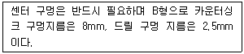
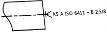
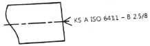
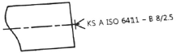
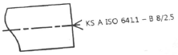
(정답률: 58%)
23. 아래 투상도와 같이 경사부가 있는 대상물에서 그 경사면에 있는 구멍의 실형을 표시할 필요가 있는 경우에 나타내는 투상도는?
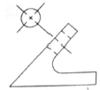
- 가상도
- 국부 투상도
- 부분 확대도
- 회전 투상도
(정답률: 71%)
24. 나사는 단독으로 나타내거나 조합하여 표시하기도 하는데 다음 중 그 표시 방법으로 틀린 것은?
- G1/2 A
- M50×2-6H
- Rp1/2/R1/2
- UNC No.4-40-6H/g
(정답률: 61%)
25. 다음 그림에서 나사의 완전나사부를 나타내는 것은?
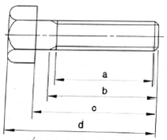
- a
- b
- c
- d
(정답률: 64%)
26. 굵은 1점 쇄선의 용도로 옳은 것은?
- 인접부분을 참고로 표시할 때 사용한다.
- 수면, 유면 등의 위치를 표시할 때 사용한다.
- 대상물의 보이지 않는 부분의 모양을 표시할 때 사용한다.
- 특수한 가공을 하는 부분 등 특별한 요구사항을 적용할 수 있는 범위를 표시할 때 사용한다.
(정답률: 65%)
27. 다음 그림과 같이 지시선의 화살표에 온 흔들림 공차를 적용하고자 할 때 기하공차의 표기가 옳은 것은?
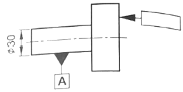
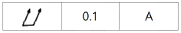
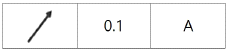
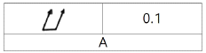
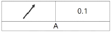
(정답률: 66%)
28. 기준 치수에 대한 구멍공차가
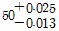
일 때 치수 공차의 값은?- 0.012
- 0.013
- 0.025
- 0.038
(정답률: 72%)
29. 가공방법과 기호의 연결이 옳은 것은?
- 래핑 - MSL
- 브로칭 - BR
- 스크레이핑 - SB
- 평면 연삭 – GBS
(정답률: 73%)
30. 기어를 도시할 때 선을 나타내는 방법으로 틀린 것은?
- 잇봉우리원은 가는 실선으로 표시한다.
- 피치원은 가는 1점 쇄선으로 표시한다.
- 잇줄 방향은 일반적으로 3개의 가는 실선으로 표시한다.
- 이골원은 가는 실선으로 표시한다. 단, 축에 직각인 방향에서 본 그림을 단면으로 도시할 때 이골의 선은 굵은 실선으로 표시한다.
(정답률: 50%)
31. 속도에 관한 설명으로 틀린 것은?
- 속도는 크기와 방향을 갖는다.
- 속도는 질점 또는 물체의 단위 시간 당 변위이다.
- 속도가 변하지 않는 운동을 등가속도 운동이라고 한다.
- 등속 운동 물체에 힘이 작용하면 속도의 크기나 방향이 바뀐다.
(정답률: 67%)
32. 도선의 단면적을 1초 동안 1C의 전하량이 흘러갔을 때의 값은?
- 1A
- 1F
- 1H
- 1V
(정답률: 68%)
33. 모터의 회전자에 생기는 토크와 고정자에 생기는 토크에 관한 설명으로 옳은 것은?
- 크기와 방향 모두 같다.
- 크기와 방향 모두 다르다.
- 크기는 다르고 방향은 같다.
- 크기는 같고 방향은 반대이다.
(정답률: 61%)
34. 다음 그림에서 화살표 방향으로 각각 같은 힘이 작용할 때 토크가 가장 큰 경우는?
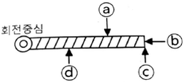
- ⓐ
- ⓑ
- ⓒ
- ⓓ
(정답률: 71%)
35. 지름 300mm인 관 속에 흐르는 유체가 평균속도 3m/s로 흐를 때 유량은 약 몇 m3/s인가?
- 0.021
- 0.21
- 2.1
- 21.2
(정답률: 64%)
36. 힘의 3요소가 아닌 것은?
- 힘의 방향
- 힘의 크기
- 힘의 작용선
- 힘의 작용점
(정답률: 78%)
37. 다음 회로에서 a와 b사이의 합성저항[Ω]은?
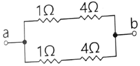
- 1/2
- 5/2
- 1/5
- 2/5
(정답률: 71%)
38. 물질 내부의 전하들이 이동하는 것을 무엇이라 하는가?
- 저항
- 전력
- 전류
- 전압
(정답률: 75%)
39. 1atm 4℃의 순수한 물의 비중량을 SI단위로 바르게 표현한 것은?
- 971N/m3
- 981N/m3
- 9710N/m3
- 9810N/m3
(정답률: 50%)
40. 압축응력에 관한 설명으로 옳은 것은?
- 압축응력은 응력의 방향이 전단응력과 동일하다.
- 압축응력은 응력이 단면에 직각방향으로 작용한다.
- 압축응력은 순수한 전단하중이 작용해도 발생한다.
- 굽힘하중이 작용해도 압축응력은 발생되지 않는다.
(정답률: 56%)
3과목: 자동제어
41. 다음 나이퀴스트 선도에 해당되는 전달 함수로 옳은 것은?
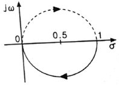
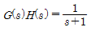
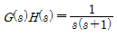
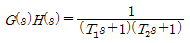
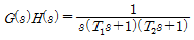
(정답률: 43%)
42. 전기식 서보기구에 관한 설명으로 옳은 것은?
- 작동속도가 유압식에 비해 느리다.
- 유압식에 비해 큰 출력을 얻을 수 있다.
- 전기식 서보기구에는 분사관식 서보기구가 있다.
- 유압식에 비해 경제성이 우수하고 취급이 용이하다.
(정답률: 64%)
43. DC 서보모터의 설계 시 응답을 개선하기 위한 방법으로 적절하지 않은 것은?
- 토크의 맥동을 작게 한다.
- 기계적 시정수를 작게 한다.
- 순시 최대 토크까지의 선형성을 높인다.
- 전기적 시정수(인덕턴스/저항)를 크게 한다.
(정답률: 68%)
44. PLC에 관한 설명으로 틀린 것은?
- PLC언어에는 IL과 LD가 있다.
- PLC의 출력부에 AC 220V의 부하를 연결할 수 없다.
- PLC의 입력부에 AC 220V용 스위치를 연결할 수 있다.
- PLC의 명령어에는 비트 시프트, 전송, 비교 명령어가 있다.
(정답률: 63%)
45. 다음 그림에서 전달함수 G로 옳은 것은?
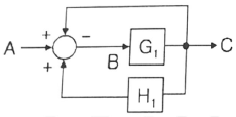
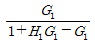
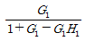
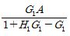
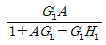
(정답률: 50%)
46. 물체의 위치나 방향, 자세 등의 기계적인 변위를 제어량으로 해서 목표값의 임의의 변화에 추종하도록 구성된 제어계는?
- 서보기구
- 자동조정
- 프로세스 제어
- 프로그래밍 제어
(정답률: 68%)
47. 유압 실린더의 속도제어 회로에 해당하는 것은?
- 미터인 회로, 블리드 오프 회로, 플립플롭 회로
- 미터아웃 회로, 로킹 회로, 카운터 밸런스 회로
- 언로드 회로, 플립플롭 회로, 카운터 밸런스 회로
- 미터인 회로, 미터아웃 회로, 블리드 오프 회로
(정답률: 70%)
48. 전달함수
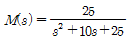
인 2차제어시스템으로 옳은 것은?- 과제동시스템
- 무제동시스템
- 부족제동시스템
- 임계제동시스템
(정답률: 60%)
49. 분해능이 8bit이고 기준 입력 전압(Vref)범위가 0~5V를 가지고 있는 D/A컴버터에 디지털 출력값으로 128을 출력하였을 경우 출력전압[V]은?
- 1.5
- 2
- 2.5
- 3
(정답률: 48%)
50. 논리식
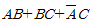
를 드모르간 정리를 이용하여 간소화한 것으로 옳은 것은?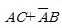
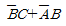
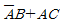
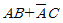
(정답률: 50%)
51. 특성 방정식 s4+3s3+2s2+5s+k=0으로 표시되는 시스템이 안정되려면 k의 범위는?
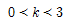
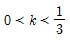
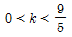
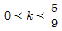
(정답률: 46%)
52. 다음 프로그램에 관한 설명으로 옳은 것은?
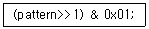
- ＞＞은 메모리상에서 비트를 왼쪽으로 이동, &은 비트 OR 연산자이다.
- ＞＞은 메모리상에서 비트를 왼쪽으로 이동, &은 비트 AND 연산자이다.
- ＞＞은 메모리상에서 비트를 오른쪽으로 이동, &은 비트 OR 연산자이다.
- ＞＞은 메모리상에서 비트를 오른쪽으로 이동, &은 비트 AND 연산자이다.
(정답률: 64%)
53. 무접점 시퀀스와 비교한 유접점 시퀀스의 특징으로 틀린 것은?
- 동작속도가 느리다.
- 소비전력이 비교적 작다.
- 접점 등의 마모가 발생한다.
- 기계적 진동, 충격에 약하다.
(정답률: 58%)
54. 타이머를 사용하여 어떤 목표 시간에 점등하는 회로의 제어방식으로 적절한 것은?
- 공정 제어
- 순차 제어
- 되먹임 제어
- 폐회로 제어
(정답률: 65%)
55. PLC의 CPU부 구성에 포함되지 않는 것은?
- 연산부
- 데이터 메모리부
- 래더 다이어그램부
- 프로그램 메모리부
(정답률: 61%)
56. 기계적 병진운동 시스템의 세 가지 기본 특성이 아닌 것은?
- 감쇠
- 속도
- 질량
- 탄성
(정답률: 36%)
57. 온도, 유량, 압력 등을 제어량으로 하는 제어에 적합한 제어 방식은?
- 서보 제어
- 정치 제어
- 개루프 제어
- 프로세스 제어
(정답률: 62%)
58. PLC 입력부에 사용되는 기기가 아닌 것은?
- 엔코더
- 근접센서
- 전자밸브
- 리밋 스위치
(정답률: 54%)
59. 다음 괄호에 알맞은 것은?
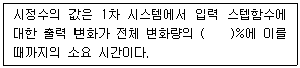
- 26.8
- 30.5
- 63.2
- 70.4
(정답률: 61%)
60. 무접점 스퀀스를 구성하는 요소가 아닌 것은?
- 논리회로
- 입력회로
- 출력회로
- 공기압회로
(정답률: 70%)
4과목: 메카트로닉스
61. 디지털 시스템의 출력 장치나 구동 장치에서 연산되어진 계산 값들을 적절한 구동신호로 바꾸어 출력하는 장치는?
- 인버터
- A/D변환기
- D/A변환기
- 초퍼 변환기
(정답률: 59%)
62. 발광부와 수광부가 서로 마주보고 배치되어 있고 이 사이에 물체가 들어가면 빛이 차단되어 출력을 내보내는 원리로 회전속도제어, 위치제어, 계수 등에 사용되는 센서는?
- 로드 셀
- 자기 센서
- 유도형 센서
- 포토 인터럽트
(정답률: 67%)
63. 중앙처리장치(CPU)의 주요 기능이 아닌 것은?
- 메모리로 데이터를 전송한다.
- 외부 인터럽트에 응답하여 처리한다.
- 프로그램 명령을 인출, 해독, 실행한다.
- DMA(Direct Memory Access)를 처리하다.
(정답률: 61%)
64. DC서보모터의 특징으로 틀린 것은?
- 제어성이 좋다.
- 속도제어 점위가 넓다.
- 열이 발생하지 않는다.
- 크기에 비해 큰 토크를 발생한다.
(정답률: 70%)
65. 다음 기호의 명칭은?
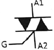
- 다이오드
- 트라이악
- 사이리스터
- 트랜지스터
(정답률: 61%)
66. 다음 회로의 논리식으로 옳은 것은?
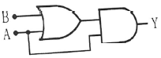
- Y=A+B
- Y=A(A+B)
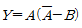
- Y=(AB-A)B
(정답률: 72%)
67. 반도체의 결합으로서 두 원소의 금속성과 비금속성의 차가 크지 않은 원소로 이루어진 두 개의 원자가 서로의 가전자를 내놓고 서로 반응하여 생기는 결합은?
- 공유결합
- 금속결합
- 이온결합
- 수소결합
(정답률: 65%)
68. 불(boolean) 연산이 아닌 것은?
- Union(합집합)
- Project(투영합)
- Intersect(교집합)
- Subtract(차집합)
(정답률: 70%)
69. 스테핑모터의 회전 속도를 결정하는 것은?
- 여자 전류
- 펄스 진폭
- 입력 펄스 수
- 입력 펄스 주파수
(정답률: 57%)
70. 다음 파형의 주파수[Hz]는?
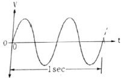
- 1
- 2
- 4
- 8
(정답률: 73%)
71. 키르히호프 제1법칙에 관한 설명으로 틀린 것은?
- 회로망의 해석에 자주 사용되는 전류 법칙이다.
- 한 점에 유입되는 전류의 합과 유출되는 전류의 합은 같다.
- 한 점에 유입되는 전류와 유출되는 전류의 합은 0이다.
- 한 점에 유입되는 전류와 유출되는 전류의 합은 대수합과 같다.
(정답률: 49%)
72. 접시머리 나사의 머리 부분을 묻히게 하기 위해 자리를 파는 작업은?
- 스텝 보링(step boring)
- 스폿 페이싱(spot facing)
- 카운터 보링(counter boring)
- 카운터 싱킹(counter sinking)
(정답률: 64%)
73. RL병렬회로의 임피던스는?
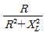
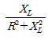
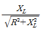
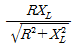
(정답률: 49%)
74. 금속의 기계적 성질 중 금속재료에 압력이나 타격을 가할 때, 종이처럼 얇게 잘펴지는 성질은?
- 전성
- 융해성
- 절삭성
- 접합성
(정답률: 68%)
75. 8개의 데이터 선과 10개의 어드레스 선을 갖는 램(RAM)이 저장할 수 있는 최대 바이트 수는?
- 80
- 256
- 1024
- 8192
(정답률: 48%)
76. 2진수 101010의 10진수 변환결과로 옳은 것은?
- 32
- 42
- 52
- 62
(정답률: 72%)
77. 다음 진리표에 해당되는 논리식은?
- Y=A+B
- Y=A·B
- Y=A⊕B
- Y=A⊙B
(정답률: 68%)
78. AC서보모터와 DC서보모터의 구조상 가장 큰 차이점은?
- 브러시 유무
- 영구자석 유무
- 고정자 코일 유무
- 전기차 코일 유무
(정답률: 64%)
79. 전자력(electromagnetic force)에 관한 설명으로 옳은 것은?
- 음, 양의 전하가 대전되어 생기는 힘이다.
- 전기에너지에 의해 일을 한 속도와 힘이다.
- 서로 같은 극 사이에서 흡인력이 작용하는 힘이다.
- 자장 내에 있는 도체에 전류를 홀리면 작용하는 힘이다.
(정답률: 56%)
80. 8비트 2진수 0010 0110을 2의 보수로 변환한 결과로 옳은 것은?
- 1101 1001
- 1101 1011
- 1101 1010
- 1101 0001
(정답률: 52%)